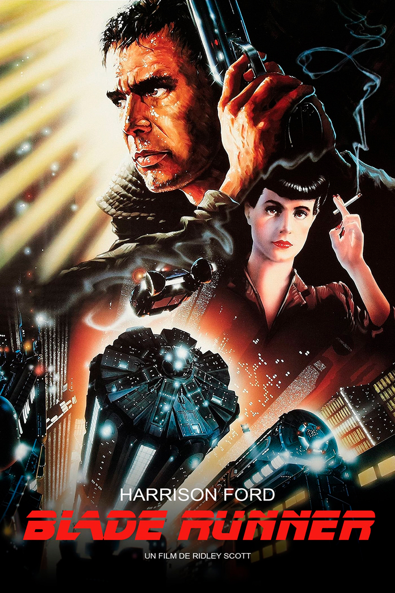

En 2019 à Los Angeles, Rick Deckard, un ancien policier est chargé de traquer un groupe de réplicants, des androïdes à l’image de l’Homme d’une durée de vie de quatre ans pour éviter qu’ils ne s’humanisent.
Affiche du film Blade Runner de 1982.
C’est autour de cette thématique que le réalisateur cherche à porter la réflexion du spectateur au travers d’un univers oppressant, néo-noir et cyberpunk, sur un questionnement sur l’humanité.